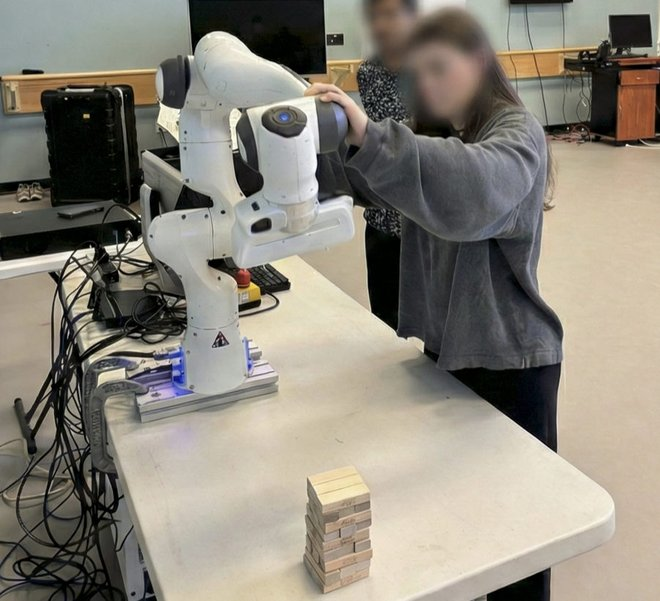
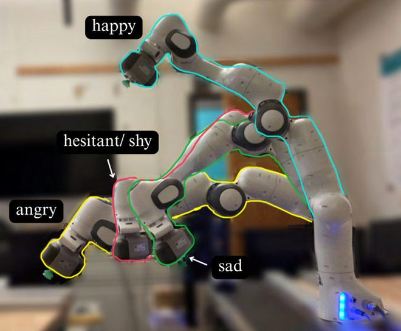
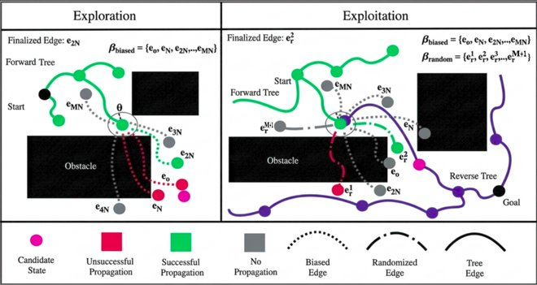
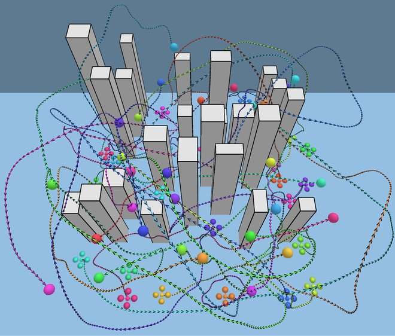
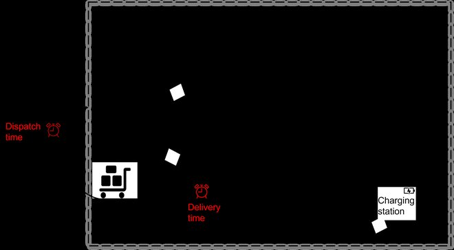

Publications
-

Dance2Hesitate: A Multi-Modal Dataset of Dancer-Taught Hesitancy for Understandable Robot Motion
Designing Transparent and Understandable Robots (D-TUR) Workshop at HRI · 2026
Releases a 220-trajectory multimodal dataset of hesitant motion, taught to a Franka Panda by dancers through kinesthetic teaching and recorded as synchronized 30 Hz robot-state streams.
-

Employing Laban Shape for Generating Emotionally and Functionally Expressive Trajectories in Robotic Manipulators
IEEE International Conference on Robot and Human Interactive Communication (RO-MAN) · 2025
Uses Laban Movement Analysis to generate emotionally and functionally expressive manipulator trajectories. Human trials supported two of three hypotheses.
-

BBoE: Leveraging a Bundle of Edges for Kinodynamic Bidirectional Motion Planning
IEEE Robotics and Automation Letters (RA-L) · 2026 · Accepted
Introduces BBoE, a bidirectional kinodynamic planner that leverages a bundle of edges, the only planner in the benchmark to reach 96% success on all four systems (3D to 6D) with the lowest planning time on three.
-

Efficient Multi-Robot Motion Planning with Precomputed Translation-Invariant Edge Bundles
arXiv · 2026 · Preprint
Introduces KiTE-Extend, a planner-agnostic action selection mechanism that guides sampling-based kinodynamic planners with a library of trajectory segments computed offline, with its clearest gains in multi-robot planning.
-

A Dynamic Heterogeneous Team-based Non-iterative Approach for Online Pick-up and Just-In-Time Delivery Problems
arXiv · 2024 · Preprint
A non-iterative, team-based method for assigning dynamic heterogeneous robot teams to online pick-up and just-in-time delivery tasks.